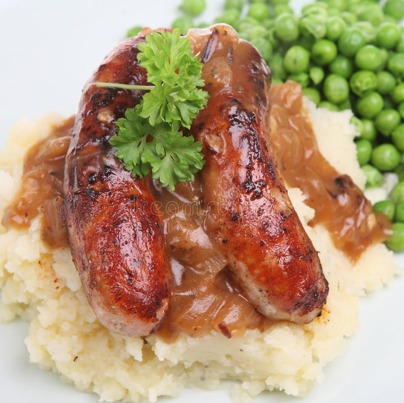

How to make Lovely Lasagna

Sausage and Mash is a british classic, and much loved!
Bangers and mash, also known as sausages and mash, is a traditional British dish consisting of sausages and mashed potato. It may consist of one of a variety of flavoured sausages made of pork, lamb, or beef.
Ingredients
- 8 sausages
- 900g/2lb potatoes, peeled and chopped into equally sized cubes
- 100ml/3½fl oz milk
- etc
Steps
- Preheat the oven to 200C/180C Fan/Gas 6.
- Put the sausages in a roasting tin and place in the preheated oven. Cook for 10 minutes then turn the sausages and cook for a further 5 minutes, or until they have a good colour on the outside.
- Add the sliced onions to the tin. Mix the dried herbs, mustard and stock together and pour over the sausages and onions.
- etc